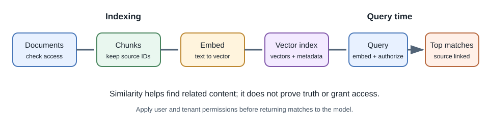
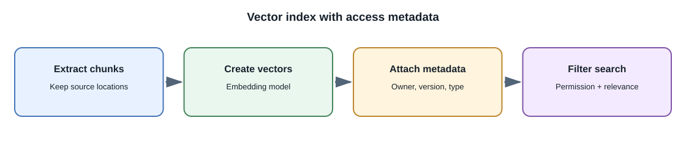

Embeddings and Vector Search¶
Introduction¶
An embedding is a numeric vector produced by a model to represent an input, such as a sentence, document, image, or audio segment. A vector search system finds vectors that are near a query vector according to a chosen similarity measure.
Embeddings are useful for semantic retrieval: texts with related meanings can be close even when they do not share the exact same keywords. They are not universal representations of truth or meaning; behavior depends on the embedding model and task.
Why do embeddings exist?¶
Keyword search is effective for exact names, identifiers, and phrases, but can miss a paraphrase. An embedding model maps input to a vector space where some semantically related inputs may be nearby. A vector index makes it practical to search these representations across a collection.
Typical indexing and query flow¶


- Select content the user is permitted to search.
- Split documents into chunks that preserve enough context and useful boundaries.
- Generate an embedding for each chunk and store it with the source ID, version, and access metadata.
- At query time, apply the same embedding model to the user's query.
- Search for nearby vectors, optionally combine with keyword search, and filter results by access, tenant, and freshness.
- Return relevant passages to the application or a generation step.
Similarity and approximate search¶
Common comparison methods include cosine similarity, dot product, and Euclidean distance. Which one is appropriate depends on the embedding model's training and whether vectors are normalized. Do not mix vectors generated by different embedding models or incompatible versions in one index without a deliberate migration.
Exact nearest-neighbor search compares against all candidate vectors and can be expensive at scale. Approximate nearest-neighbor indexes trade some recall for faster lookup. Tune them using representative data and measure whether relevant items are actually found.
Chunking and metadata¶
Chunk size and overlap affect retrieval. Tiny chunks may lose context; huge chunks can dilute relevance and consume more model context. There is no universal best size. Evaluate retrieval on questions whose expected sources are known.
Store enough metadata to display and authorize results: document ID, section/title, chunk location, owner/tenant, source version, and update time. Apply authorization filters during retrieval, not only after
For example, a short API reference may work well as one chunk per endpoint with its HTTP method and heading attached. A long policy document may need paragraph-sized chunks that retain the section title and effective date. Measure on questions with known evidence instead of selecting chunk size by habit. Apply authorization filters during retrieval, not only after generating an answer.
Hybrid search and reranking¶
Hybrid search combines vector similarity with lexical search. It can improve cases where exact terms such as product codes or legal names matter. A reranker evaluates a smaller candidate set and reorders it for a query. These components add cost and latency, so measure whether they improve retrieval quality for the task.
Vector search can be implemented with a dedicated vector service or a database extension alongside application data. A dedicated service may offer specialized indexing and scaling; a relational database extension can keep metadata and application records close together. Evaluate filtering, backup, update, deletion, index rebuild, and operational needs. The best choice depends on workload and the team's ability to operate it, not on a product label.
Full-stack example: personal notes¶
When a user asks "What did I decide about the database migration?", the backend embeds the question and searches only the user's permitted notes. It returns note titles, dates, and relevant excerpts. If those results feed an LLM, include stable source identifiers so the UI can link every claim back to the note.
Developer perspective¶
Vector search is a retrieval component, not a replacement for a primary database, access-control system, or backup strategy. Decide how updates, deletions, model-version changes, tenant filtering, and index rebuilds work.
Common misconceptions¶
- Similarity is not proof that a document answers the question.
- Vector search does not automatically provide citations or authorization.
- A vector database does not train the embedding model.
- The same text embedded by different models can produce incompatible vectors.